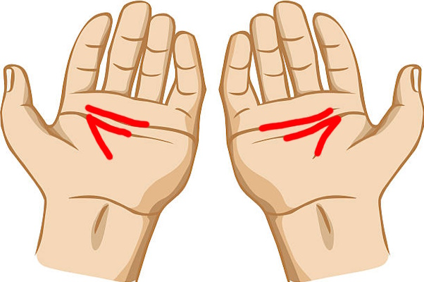

-----Quran Miracle's-----
Quran Miracle's #1
Surah Ar-Rahman (Ayat 19-22), "He has let loose the two seas (the salt water and the sweet) meeting together. Between them is a barrier which none of them can transgress." This referrs to the Atlntic Ocean and Pacific Ocean meeting forming a border.
Quran Miracle's #2
Surah Fussilat (Ayat 53), "We will show them Our signs in the universe and within themselves until it becomes clear to them that this Quran is the truth. Is it not enough that your Lord is a Witness over all things?" On your left hand it says 81 in Arabic and on your right hand it says 18 in Arabic. If you subtract 18 from 81 you get 63, that's the age Prophet Muhammad ﷺ died. Aisha was 3 when Prohpet Muhammad ﷺ married her, 6 plus 3 is nine, thats the age that Prophet Muhammad married Aisha. 81 plus 18 is also 99 and ﷲ has 99 names.